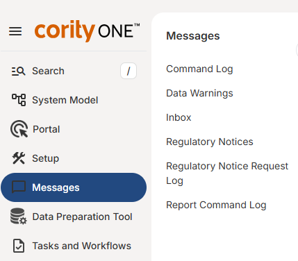

The Messages page helps you view and manage your system messages, including both new and archived task notifications and data warnings.
To access the Messages page:
Select Messages from the menu.

Select the Message type from the pop-out menu to the right, or from the Messages page.
Messages include the following types:
Command Log: Shows data transactions sent to the system. This includes new data entries or data uploads, which may or may not be viewable yet in the system, depending on any recalculations that are required and the data queuing constraints.
Data Warnings: Shows warnings for numeric data that exceeds specified internal and external limits.
Inbox: Shows task reminders, task assignment notifications, and notifications of other task-related activities, such as task updates, task deletions, and task status changes.
Regulatory Notices: Shows notices you have received of changes in regulatory citations you are monitoring through the BNA Cite-It service.
The notifications in your Inbox are for your information only. Once a communication has been read, it may be archived or deleted.
The most recent task, data warning and notification messages are also displayed in the Messages panel on your desktop (or other dashboard) for a quick look at the most current items for your attention.